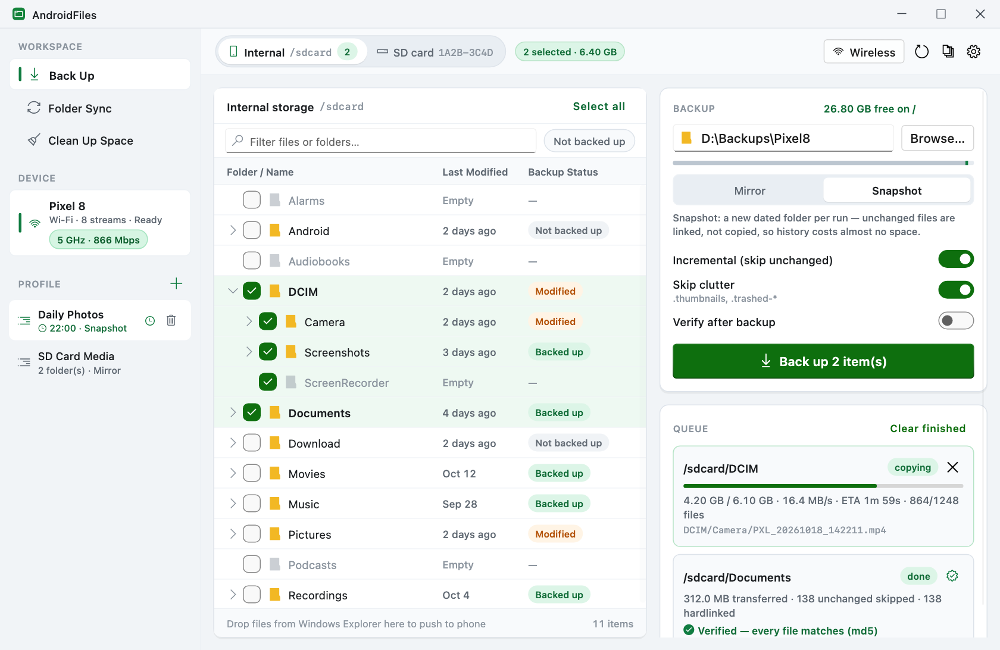
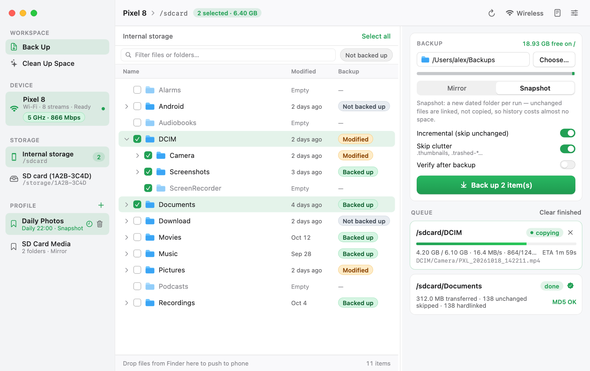

Back up your Android phone to Windows or macOS over ADB — several times faster than MTP, incremental, and verified.
Free & open source (MIT) · Windows 10/11 x64 (Setup.exe / portable ZIP) & macOS (DMG / Apple silicon & Intel)


Folders leave the phone as one continuous tar stream — no per-file round-trips, so big folders transfer at full USB speed where MTP crawls.
Re-runs move only what changed. An untouched 50 GB photo library re-verifies in seconds and transfers 0 bytes.
Keep a dated folder per run — unchanged files are hardlinked (NTFS on Windows, APFS/HFS+ on macOS), so months of history cost almost no extra disk.
File counts are checked after every run, and a deep-verify mode compares md5 of every file on both sides.
Press Space or double-click any file in Device Folders or Clean Up Space to preview photos (including HEIC), videos, audio, PDFs, Markdown, HTML, JSON, and logs — native macOS Quick Look window or pop-out Windows viewer, pulling locally first when already backed up.
Spot space-hog folders and large files, find exact MD5 duplicates, inspect per-app APK / data / cache storage (with one-click Trim All Caches), and safely offload older media with automatic backup & MD5 verification before deleting.
Switch between internal storage (/sdcard) and mounted
external microSD cards (/storage/<UUID>) without pulling
the SIM tray, plus search & filter Device Folders by name or
Not backed up status.
Mount the phone as a real drive letter and browse it in Explorer (via WinFsp) — read-only by default, writable if you opt in.
Pair by scanning a QR code, reconnect automatically, monitor live Wi-Fi band & link speed (with 2.4 GHz warning and high-performance Wi-Fi lock during transfers), and schedule daily backups.
Windows 11 Hybrid Fluent UI with Mica sidebar & Bento cards, and a dedicated 3-pane Finder & Inspector UI on macOS with menu bar shortcuts, native notifications, external drive protection, and keep-awake.